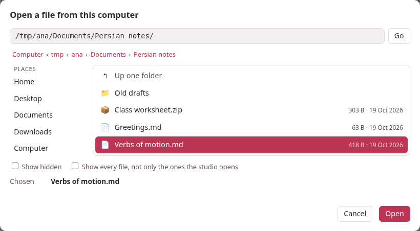
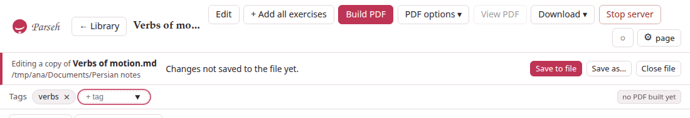
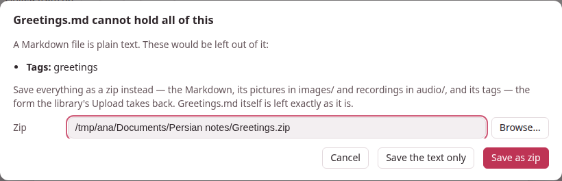

Opening a file from your computer
The library holds the documents the studio keeps. But a note you wrote in a folder of your own, a zip a colleague sent you, a Markdown file in a project you are working on are not in it — and they do not have to be. Open a file… on the library’s bar opens one where it is, in the studio’s own pages, with its editor, its preview, its PDF and everything else a document has, and without copying it into the library.

1. A copy, and one moment#
The studio never edits your file directly. It reads the file into a copy in a temporary folder (markdown/open/, inside Parseh’s own folder), and every edit, every reading, every PDF is made on that copy. Your file changes at one moment: when you save. Close the file and the copy is deleted.
That is the whole safety of it. Opening cannot change the file. Typing, recolouring a word, adding a picture or a tag cannot change it. A crash, a full disk or a refused permission in the middle of a save cannot leave it half written, because a save writes a new file beside it and swaps it in whole. And the library is never touched: nothing of the file gets a name in it, a place in it or a link to it.
From any device Parseh lets in — and the disk is the computer’s. The computer itself, a laptop over a VPN, a phone on the Wi-Fi: each can press Open a file…, and the files it browses and saves to are always the ones on the computer Parseh runs on, not on the device in your hand. From another device the windows say whose disk it is (Open a file on studio-desk, Save as… on studio-desk, and the bar names the computer after the folder). A file that lives on the device itself is brought in with Upload .md / .zip, which copies it into the library. On a phone in Mobile mode the library shows no buttons that write; choose Browser in its switch to get this one.
2. Opening#
Press Open a file… on the library page. A window with a file browser of the computer Parseh runs on opens, and there are two ways to say which file, whichever you like:
- Browse.
- The places on the left — Home, Desktop, Documents, Downloads, the drives and volumes of the computer — and, under them, Recent: the files you opened lately, one click each. Click a folder to go into it, Up one folder to go out, a name in the path above to go back to it. Folders come first, then the files the studio opens, in their natural order (lesson 2 before lesson 10). A click on a file chooses it; a double-click, or Open, opens it. Show hidden shows the files whose names start with a dot; Show every file shows the ones the studio does not open as well, dimmed.
- Type or paste a path.
- The box at the top takes a folder (it goes there) or a file (it opens). A path that is not there takes you to the nearest folder that is, and says so.
The studio opens .md, .markdown and .txt files as Markdown, and .zip files.
A Markdown file opens as it is. If it shows pictures or recordings (images/cat.png, audio/word.mp3) that sit beside it — in an images/ and an audio/ folder next to the file, which is where a zip of the document unpacks to, or in the file’s own folder — they are read in, so that the page shows them; they stay where they are and are never moved or deleted. One it names and cannot find is said in a note on the bar (⚠ 1 note), not refused.
A zip opens when it holds a Markdown document in the layout the studio’s own zip has (see Bringing documents in and out): name.md, its tags in name.tags.json, its pictures in images/ and its recordings in audio/ — in any folder of the zip. A zip of several Markdown files asks Which document in it?, by their titles; the studio opens one at a time, and the rest of the zip is kept exactly as it is. A zip is refused, with a sentence that says why, when it is a Backup of a whole library (put that back with Load from backup), when it holds only other zips, when it holds no Markdown, when it asks for a password, or when it is far larger than any document.
A few more things are refused in words: a file that is not UTF-8 text, a Markdown file of more than 5 MB, and a file inside Parseh’s own folders (a document of the library, a note of a book, a deck): open those from where they belong.
Opening the same file twice goes back to the first copy; it never makes two that could disagree.
3. The bar under the title#
A file’s pages — the document page and the editor — are the studio’s own, with one bar added under the title.

It names the file and the folder it is in, and says whether the file holds what the page holds:
- Saved.
- The file holds what this page holds.
- Changes not saved to the file yet.
- Something on the page — a tag, a recoloured word, a picture, the text — is not in the file. Save to file is the button to press.
- The file changed on disk.
- Something else wrote to it after you opened it (below). With changes of your own, it says both.
- The file is not where it was.
- Moved, renamed or deleted. What you have here is safe; Save as… puts it somewhere.
- Read-only.
- The file will not take a save; Save as… will.
And it has the buttons Save to file, Save as…, Load it again (when the file changed on disk) and Close file. ⚠ n notes lists what to know about how the file was opened: a picture it names and does not have, a control character that was left out of the text.
“Unsaved” is not a flag somebody remembers to set: the studio compares what the copy holds — the text, the tags, every picture and recording — with what the file last held. Type a word and take it out again and the bar says Saved again. A save of nothing new writes nothing, and the file’s date does not move.
Everything else on these pages works as on any document: the editor, the reading tools, the exercises and + Deck, Build PDF, Download ▾. Duplicate and Delete are not offered: there is no second document to duplicate and nothing to delete — Close file is the end of it.
4. Saving#
- In the editor, Save (or Ctrl+S) saves twice, as one act.
- The text goes into the copy and then into the file, so that pressing Save does what every editor’s Save does. The toast says which: Saved to lesson.md.
- On the document page, changes wait for Save to file.
- What the page does at once — recolouring words, tags, uploading pictures and recordings — changes the copy only, and the bar says so until Save to file (or ⌘S / Ctrl+S).
- Only what changed is written, and as it was found.
- A Markdown file keeps its line ends (CRLF or LF) and its byte order mark; no front matter is added to a file that had none, and no title is made unique or renamed. A zip’s other entries — a README, other folders, other documents, files the studio does not understand — come back byte for byte, in their order, with their dates and modes; only the document’s Markdown, its tags and its pictures and recordings are replaced, added or dropped.
- Whole or not at all.
- The new file is written beside the old one and swapped in; the old one’s permissions are kept; a file that is a link is written at its real place, so the link stays a link. A file that is read-only is not replaced. If only the folder refuses a new file, the file is written in place instead.
- Save as…
- is the same browser, with a name to type, and the page then stands for the new file; the one it came from is left as it was. A name that is taken asks before it is replaced.
5. A Markdown file cannot hold pictures#
A Markdown file is plain text: it has no folder for pictures or recordings, and no place for tags. So when you save one that has gained any, the studio asks, naming what would be left out:

- Save as zip
- writes everything into a zip beside the file —
lesson.zipforlesson.md, the name and the folder yours to change — in the studio’s own Markdown + media layout:lesson.md,lesson.tags.jsonwhen there are tags,images/,audio/. Upload .md / .zip on the library takes it back.lesson.mditself is left exactly as it was: converting never rewrites your file into something else. From then on the page stands for the zip, and a save writes into it. - Save the text only
- writes the Markdown and leaves the rest out. The studio does not ask again about what you accepted to leave out, only about what is new.
- Cancel
- writes nothing.
A picture that is already beside the file in images/ is not a reason to ask: the Markdown holds the document, and the picture is where it should be.
6. When the file changed meanwhile#
The studio keeps the file’s size, its date and a checksum of what it read. At a save it looks again, and a difference in the bytes — a file that was only touched is not one — means somebody else changed it. Nothing is ever overwritten without a word:
- Replace it with my version
- saves anyway.
- Save as another file…
- keeps theirs and writes yours elsewhere.
- Cancel
- keeps working. In the editor the text is saved to the copy, and the toast says Saved here — not to lesson.md yet. and the page stays.
With nothing of your own on the page, Load it again throws the copy away and opens the file as it is now.
7. Closing#
Close file deletes the copy and goes back to the library. When the copy holds something the file does not, it asks first — Save and close, Close without saving, Keep working — and in the editor it asks about typing that is not even saved here, before that.
Closing the tab does not close the file, and does not lose anything: the library page lists Files open now, each with Read, Edit and Close, and what has changes the file does not hold says so.
Nor does stopping Parseh lose a copy — Stop server does not ask about them. A copy with nothing unsaved is deleted when Parseh stops and again when it starts; one with unsaved changes is kept, and the library page lists it with Parseh stopped before these changes were saved: they are all still here. A folder of a copy that cannot be read at all is deleted after a day, unless it holds a record and a copy that another version of Parseh made: that is left where it is.
8. What a file’s pages do not have#
A file is a library of one document, which is what keeps it from disturbing anything:
- Links to the library’s documents do not resolve.
- A
[…](doc:Name)link to a document of the library is drawn as a link to a document that is not there (see Names and links). - The library’s own business is not offered:
- a new or duplicated document, Delete, uploads of zips and backups, Backup and the documents’ download in bulk. They answer that they belong to the library.
- Nothing else changes.
- A LaTeX drawing made for the file belongs to it and is let go when the file is closed.
Where the copies are kept, and how a copy is laid out, is in the file layout.